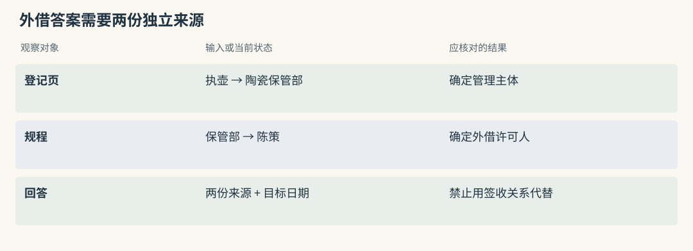
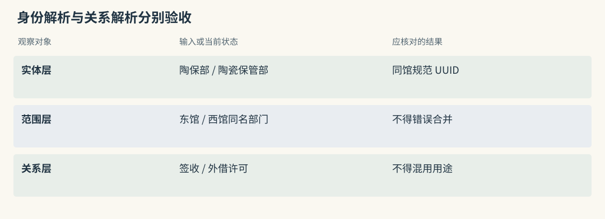
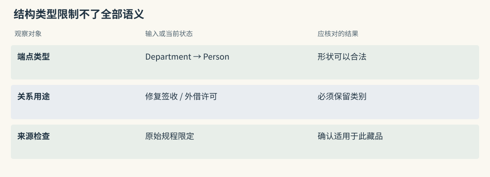
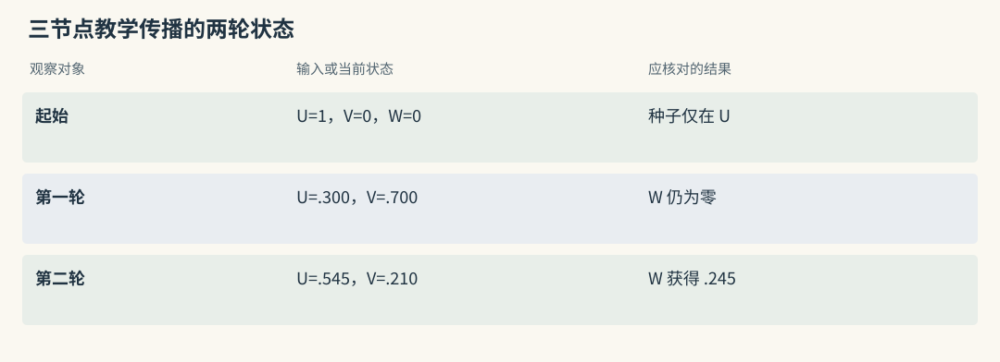
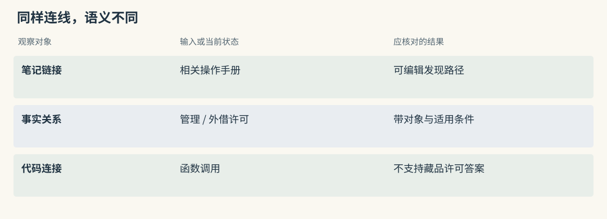
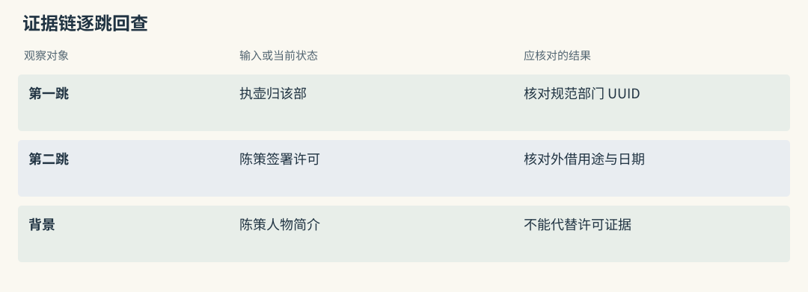
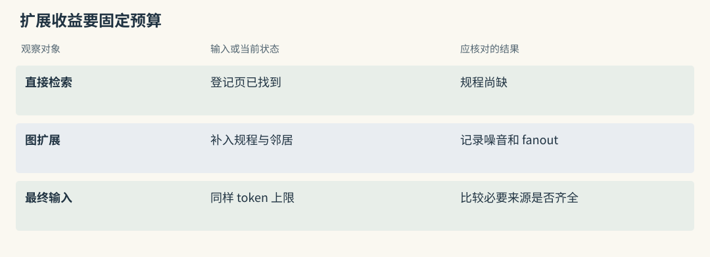
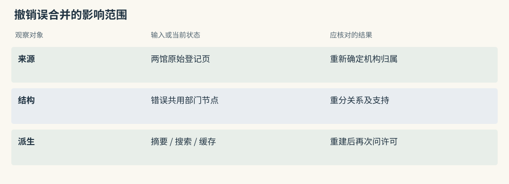
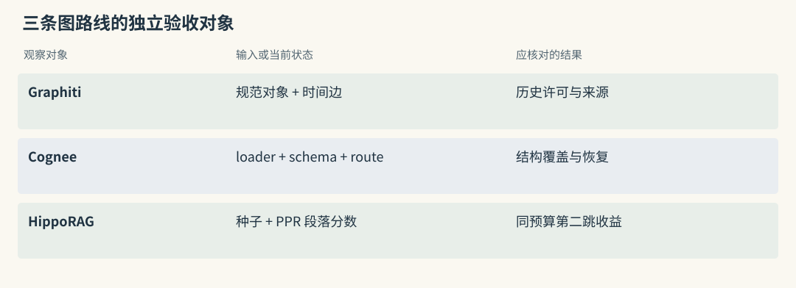

图谱路线：Graphiti / Cognee / HippoRAG
一份文档没有答案，两份合起来才有
馆内有两份独立资料：
藏品登记页：青釉执壶归陶瓷保管部管理。
借展规程：陶瓷保管部藏品外借须由陈策签署许可。
问题：借出青釉执壶，需要谁签署许可？登记页包含藏品名，规程没有；规程给出签署人，登记页没有。一次段落相似度检索可能只找回第一份，模型即使读懂它也无法回答。图检索希望把共同的“陶瓷保管部”保存成可利用的连接，让第二份资料有机会进入证据集合。
节点可表示藏品、部门、人或段落，边说明管理、许可或包含关系。连接只是查找线索，借出执壶还需要确认许可适用于外借，并在目标日期有效。以下是教学资料，不对应真实馆藏记录。
源码路径与适用范围（选读）

Mem0：实体关联只能提供第二跳线索
两份材料可以形成两张卡：执壶由陶瓷保管部管理，陶瓷保管部外借许可由陈策签署。第一轮查询发现部门后，应用再用部门与外借用途执行受限查询。
实体关联可帮助相关卡片加分，却没有为“管理”和“签署”建立方向明确的推理链。若第二张卡未入语义池，实体 boost 仍不保证它返回，应用需要显式补取第二份证据。
Graphiti：两份材料通过规范团队节点连接
两次 add_episode() 理想地把陶瓷保管部解析为同一规范 UUID，形成“藏品到部门”和“部门到许可人”的连接。但基础边搜索不默认遍历整条路径。
要使用第二跳，可以选启用 BFS 的高级配置，或读到规范部门后另查邻边。最终应保留两条 fact 与各自 episode，回答模型必须看到许可的对象和用途，不能只接收陈策这个名字。
Graphiti：把变化中的事实连回原始输入
Graphiti 将材料作为 episode 保存，再抽取其中的对象和关系。两份资料出现同一个部门时，entity resolution 决定是否使用相同节点；edge resolution 判断新关系是重复证据、补充信息还是取代旧状态。
假设规程把部门简称为“陶保部”，别名解析正确时能接上许可链。如果另一个馆也有同名部门，错误合并会把别馆签署人引入答案。group 范围、机构身份与来源有助于消歧，但仍需检查实际 UUID，而非只看显示名。
十月十二日起改由许宁签署时，图可以保留陈策的旧有效区间和许宁的新区间。问十月八日与问当前，所需证据不同。关系时间提供表达方式，查询仍须选用相应过滤，不能因为存了历史就假设每次读取自动选对版本。
源码路径与适用范围（选读）

Mem0：相近名字合并只影响实体索引
规范化文本与近邻相似度帮助实体索引把“陶保部”和“陶瓷保管部”归在一起，主要结果是更新 linked_memory_ids。关联对象相近，并不说明两张卡表达了同一许可关系。
纠正同名部门时，还要清理错误的实体关联。只改某张卡的显示名称，可能留下仍参与评分的旧链接，导致以后继续召回另一机构的资料。
Graphiti：节点解析与边解析要分别阅读
resolve_extracted_nodes() 先解决身份，生成临时节点到规范 UUID 的映射；resolve_extracted_edges() 再检查关系重复与矛盾。两阶段要分开验收。
如果执壶被连到外馆部门，属于身份问题；如果正确部门的出入库登记权被误认为外借许可权，属于关系语义问题。增加查询深度不能修复任一种写入错误。
Cognee：先规定希望从资料里整理出什么
Cognee 可以把文档、表格、代码与会话送进不同处理管线。对借展资料，schema 可规定关注藏品、保管部门、人员和许可类型。加载器读取文件，分块保留可处理的原文单位，抽取按结构建立知识，再写入元数据、图与向量索引。
schema 太窄会漏掉“代签”“限期授权”这类真实条件；太宽则容易把任何签名都抽成许可。切块若拆开“本条仅适用于馆内调拨”，后续结构也可能过度概括。应保留原始块，核对结构中没有被删掉的限定。
查询时要记录实际 retriever。取原文块、跨对象连接和复用 session 经验不是同一访问；有些 recall() 路径已经生成答案，不能再把这份结论当作未经加工的原始证据。比较图收益时，应固定 reader 和预算，先问是否补齐了两份许可来源。
源码路径与适用范围（选读）

把两份文档写入 Graphiti 的完整调用形状
下面是需要预先配置的异步接口片段。graph 已连接 LLM、embedder 和 driver，索引也应提前建立；分组来自服务端授权映射。本章未调用远程模型或图服务。
from datetime import datetime, timezone
from graphiti_core.nodes import EpisodeType
reference = datetime(2026, 10, 3, 9, 0, tzinfo=timezone.utc)
materials = [
("登记页 QY-731", "青釉执壶归陶瓷保管部管理。", "登记册修订 4"),
("外借规程", "陶瓷保管部藏品外借须由陈策签署许可。", "规程修订 2"),
]
receipts = []
for title, text, edition in materials:
receipt = await graph.add_episode(
name=title,
episode_body=text,
source_description=edition,
reference_time=reference,
source=EpisodeType.text,
group_id="museum-east",
)
receipts.append(receipt)
edges = await graph.search(
"借出青釉执壶需要谁签署许可？",
group_ids=["museum-east"],
num_results=8,
)两次写入顺序等待，便于说明来源关系，但不保证实体解析必然正确。receipts 中应核对 episode UUID、部门规范 UUID 与关系来源；第二份写入可能复用旧关系 UUID，因此边数不一定等于新事实数。
最后的基础搜索也不保证自动补齐第二跳。若仅返回管理关系，应明确追加部门许可查询，或选择含遍历的高级配方。写入有图与这次读取使用了图扩展，是两个分别需要观察的结果。
关系裁决为什么先给模型短索引，再由代码验范围
关系维护把同端点重复候选和全组可能冲突候选组成短索引列表。模型返回索引，代码检查范围后映射回真实边。这能阻止任意 UUID 混入结果，却不能阻止模型选错一个合法候选。
正文与端点完全相同时可以走快速路径复用旧边并增加来源。语义同义则可能经模型裁决复用 UUID；真实规则变化会继续影响旧边区间。new_edges 的身份判断又决定哪些新增信息参与摘要更新。
因此一份新规程可能增加来源、改变旧区间，却没有等量新增边。核验应依次查看材料、规范节点、端点、fact、来源和失效结果，摘要放在最后检查。只统计图的总边数，无法发现许可对象被改错。
Mem0：自定义提示不能凭空创建 schema 图
自定义提取提示可以要求写清“哪件藏品、哪种许可、由谁签署”，普通结果仍是文字事实。应用另附结构 metadata 时，也必须自己校验和维护查询。
Mem0 的实体列表没有因此变成 typed schema 图。若要支持多跳查询，应明确额外的数据模型和代码，不把提示中出现类型名称当成数据库已实现类型化关系。
Graphiti：entity_types 与 edge_type_map 约束合法组合
Pydantic 实体类型可以区分 CollectionItem、Department 与 Person，edge_type_map 指定哪些端点组合允许某种关系。这限制输出形状，也帮助抽取器减少随意连接。
外借许可、修复签收和调拨确认仍可能共享同一端点组合。类型通过不代表用途正确，schema 应保留许可类别与适用对象，并用“同一人只负责修复签收”的反例测试。
HippoRAG：把相关性沿连接传播
HippoRAG 先从段落抽取三元组，再将实体短语、事实与 passage 连接。查询找到相关事实和直接相关段落，形成本次搜索的种子。Personalized PageRank，简称 PPR，根据这些种子在连接上反复分配质量，最终给段落排序。
用一个与真实索引分开的手算图说明：U、V、W 连成无向链，起始全部质量在 U，每轮 30% 返回 U，其余 70% 沿边均分。
初始：U=1.000，V=0.000，W=0.000
一轮：U=0.300，V=0.700，W=0.000
两轮：U=0.545，V=0.210，W=0.245第二轮 V 的 0.700 先乘 0.7，再分给两端，各为 0.245；U 还获得重启的 0.300。W 没有直接种子也能得到质量。实际 PPR 会继续迭代，并受权重、归一化和收敛条件影响。
在借展资料中，藏品和部门相关种子可能把许可规程带入高分段落。分数表达检索相关程度，不是陈策具有权限的可信概率，回答还要读回原文。
源码路径与适用范围（选读）

Mem0：实体数量权重不等于 PageRank
实体 boost 是对现有候选的局部调整，其中关联数量过多的泛化实体影响会受抑制。它没有转移矩阵、重启分布或持续迭代。
用“藏品”这样的高频实体测试时，应观察它是否让无关卡片整体靠前。即使调整有效，也应称为评分修正，不能据此宣称执行了 PPR 或跨关系演绎。
Graphiti：BFS 与距离重排也不等于 PPR
BFS 按层扩展邻居，中心距离重排按与起点的距离调整次序。PPR 则将质量反复沿图传播，并持续拉回种子。三者的输入与循环不同。
Graphiti 某次搜索用了 BFS，不表示它采用 HippoRAG 的整图传播。比较时保留实际任务、深度与输出单位，才能解释第二份规程究竟怎样被找到。
为什么不同的图不能交换算法名字
同样称为边，Basic Memory 的笔记链接可能由人显式维护，A-MEM 的笔记关联来自模型建议，CodeGraph 的连接表示符号调用，Graphiti 的边则表达关系事实与时间。图形上都能画出连线，含义却不能互换。
若需要回答借出权限，应找到管理和许可事实；代码调用边无法承担这个角色。若只是定位操作手册，显式笔记链接可能足够，不必套用 PPR 名称。选择算法之前，先确认建立了哪类连接，本次读取实际利用了哪类连接。
源码路径与适用范围（选读）

Mem0：memory_id 列表没有关系谓词
某实体索引关联 F1、F2，只表示两份文字谈到同一个对象，并没有谓词说明它们如何相关。F1 写“由该部保管”，F2 写“该部修复记录由陈策签收”，不能组合成外借许可。
应用需要读正文限定并回到来源。修正错误实体聚合时，除正文外也要更新相关 IDs，避免索引继续提供错误的第二跳线索。
Graphiti：关系名、端点和 fact 都要一致
应同时核对源 UUID、目标 UUID、关系名和自然语言 fact。若关系名写“许可”，fact 却说“接收修复报告”，当前边不能支持借出答案；端点方向错误也可能改变谁许可谁。
来源 episode 是核验入口。可到达、用途匹配与来源可信分别成立后，连接才有资格参与回答，不能让图形布局替代文本判断。
沿着批准链核对每一步，而不是相信连接本身
借出执壶的候选链包括“执壶归陶瓷保管部”和“陈策签署该部许可”。回查后若第二份原文实际写的是修复工程许可，链条即使连到正确的人，也不适用于藏品外借。
Graphiti 的类型和日期可减少此类混淆，前提是抽取没有丢掉条件；Cognee 可以在 schema 中要求许可类别，遗漏类型又可能导致漏抽；HippoRAG 的传播负责发现段落，尤其不应把无向可达路径解释成逻辑证明。
可以把结果分成必要证据与背景材料。人物简介帮助识别陈策，但不是许可权的证据。少一份支持材料时，应继续查或说明“已确认保管部门，尚无当前外借签署依据”，而不是凭背景补全答案。
源码路径与适用范围（选读）

Mem0：两次检索的证据需要成组打包
第一次查到管理关系，第二次查部门许可，两轮应保持同一可信范围并保留查询关联。第二次从别馆返回的同名部门卡片不能拼入当前藏品的链条。
组装时一起传入两份正文、来源和生效条件。只留下第二轮人名会让 reader 无法核验该人为什么适用于这件藏品，也无法区分许可与签收。
Graphiti：fact 与来源链要逐跳回读
检查中间部门 UUID 是否一致，两个关系在目标日期是否有效，再通过 episodes 读原文。显示名相同不等于身份相同，边有来源也不等于来源支持被抽出的语义。
若某跳只支持修复签收，应将其从外借证据中移出，并记录缺失要素。图搜索成功返回边列表，不应直接转成“证据充分”的布尔值。
PPR 为什么能找第二跳，也为什么会被泛化节点带偏
陶瓷保管部可能管理几百件藏品，“外借”又可能连接多个展览与历史规程。传播经过这些泛化节点，会把大量无关段落带入候选。错误同义链接也会扩大影响。
重启分布让搜索不断回到当前问题的种子。传播比例小，更偏向直接命中；比例大，连接结构影响更强，但同时可能增加噪音。提高比例不等于提高推理能力，还要结合边权与节点连接度判断。
检验收益应固定最终 token 或段落数：dense 已找到登记页、漏掉规程时，传播是否在相同预算下补回后者？如果只是把上下文加长十倍，最终答对不能单独归因于图结构。
源码路径与适用范围（选读）

Mem0：先增大语义池和多次查询作简化对照
先把一次查询与“藏品查询后再查部门”的简单对照放在同一预算下比较。两次受限查询若已补齐规程，就能估算是否真的需要维护整张传播图。
同时记录新增调用、候选数和最终来源覆盖。若关键词报告只在语义池外，先增加池或独立补取，别把初选问题误当成缺少图推理。
Graphiti：BFS 深度与 fanout 影响噪音
启用 BFS 的高级配方可以从初始边的源节点扩展候选。部门的 fanout 很大时，增加一层可能得到大量其他藏品规则，反而挤掉必需的许可来源。
应保存深度、邻居限额、补入 UUID 和最终截断列表。评价扩展要看第二跳证据是否留下以及噪音成本，不以访问节点数多作为改善。
建图的成本，还包括错误怎样撤销
假设两个馆的陶瓷保管部误合并，后来每馆又加入几十份规程。拆分时需要从来源判断哪些关系属于哪个机构，还要重建由错误连接生成的摘要和索引。改一个显示名无法完成撤销。
删除一份资料也会遇到共享支持。某项许可规则可能同时见于正式规程和补充通知，删掉通知并不一定意味着该规则失效；反过来，通知中的私人备注不应因规程仍存在而被保留。需要以原文和派生关系审查影响。
因此图的试用成本应包含误合并纠正、来源移除和重建，而不只测一次第二跳成功。来源映射在这种操作里是恢复依据，缺失后很难解释哪条关系应该留下。
源码路径与适用范围（选读）

Mem0：正文更新会清理旧实体并重新链接
显式 _update_memory() 改正文时，会先尝试移除旧实体中的 memory_id，再为新正文建立关联，并更新检索表征。旧关联清理失败可能被作为非致命错误处理。
纠正跨馆卡片后，应查实体记录是否仍指向它，并清应用摘要和缓存。成功返回的更新结果只能说明主操作完成，不能代替所有辅助状态的一致性验收。
Graphiti：删除来源的当前实现需要谨慎审计
快照中的 remove_episode() 根据 entity_edges 找边，并用 edge.episodes[0] == episode.uuid 判断创建来源；节点清理还涉及是否仅被该 episode 提及。这种规则不能当作完整共享支持重建算法。
应专门测试一边多来源、旧边失效和摘要含私有信息的情况。删除源 UUID 查不到，不足以证明派生文字已清除，实际采用须补审计与必要重建。
动手检查
把登记页限定为东馆陶瓷保管部，同时加入西馆同名部门的外借规程。然后再给东馆一份正确规程。手工标出藏品所属机构、部门规范身份与许可用途，预测哪些关系可组成答案。
答案提示：采用东馆登记页和东馆规程，两条关系在规范部门身份上连接；西馆同名部门不是该连接的替代端点。单纯增加遍历深度会经过更多错误连接，无法修复建图时的身份混淆。再模拟删除一份重复规程，检查剩余来源是否仍能合法支持关系。
实现细节与复查入口（选读）
Graphiti：从 episode 到带时间的事实边
Graphiti 用 episode 表示输入经历，用 EntityNode 表示对象，用 EntityEdge 表示关系事实。来源、规范身份与时间一起支撑增量维护。节点 summary 只是压缩视图，不应替代高风险许可关系。
对借展场景，可以独立验证三件事：执壶归属解析正确，签署关系具有外借语义，目标日期选对有效版本。三项通过后，再测整条查询是否将来源送进回答。
写入为什么需要 resolution
从 graphiti_core/graphiti.py 的 add_episode() 追写入，可看到读取前序材料、抽取对象、解析规范身份、抽取关系、修正端点、判断重复与冲突、处理时间、更新摘要并保存的编排。
“青釉执壶”与登记号可能需要合并成同一对象，“陶保部”也可能是规范部门的别名。合并不足会形成断开的子图，合并过度会让许可跨机构适用。两种错误都要有样本，而非仅测试同名别名能否合并。
关系解析还需区分相似与取代。新材料说“修复期间暂停外借”，可能暂时限制当前许可，却不代表藏品永久转交其他部门。模型判断之后应核对真正被结束的边。
时间字段分别回答什么
created_at 是系统保存时点；valid_at 与 invalid_at 表达现实中的成立与结束；expired_at 表达系统何时将边判为过期。episode 的 reference_time 为“上周”“月底”提供解释锚点。
十月二十日收到通知，说明十月十二日起由许宁代签，接收时间不能替代生效时间。问十月八日仍应取陈策，问十五日则取许宁。未来预告、迟到事件与纠正都应分别测试，防止只按最新创建时间排序。
hybrid search 怎样回到证据
框架为边、节点和 episode 提供不同搜索结构。全文、cosine 与按配置启用的图方法可组合，再融合或重排。基础搜索主要返回关系，组合结果可能含其他对象，来源覆盖的计算单位也要随之说明。
查询带回 fact 后，应用还要依 episode 引用读取原文，并在授权范围内组织输入。错误节点会让邻域扩展更有效地传播错误，因此实体准确率、边失效正确率和证据覆盖应分开记录。
依赖与交付边界
模型执行抽取与解析，embedding 维护语义表示，图数据库保存关系与索引。模型不能稳定遵循结构化输出时，写入成功率会下降；更换 driver 也需要重新核对索引、时间和查询行为。
MCP 或 FastAPI 改变服务接入方式，不会取消这些依赖。Graphiti 开源框架与 Zep 托管系统的线程管理、规模化部署和延迟保证要分开评估，不能从同一论文路线推断交付物一致。
Cognee：把异构输入变成可检索知识
Cognee 的上层入口可以看到 remember/recall/improve/forget，底层仍有 add、cognify 和 search 等管线。文档、代码、session、Skill 与特定记忆条目可能走不同分支，适合需要统一多类知识的应用。
统一入口也带来路由责任。馆内若同时导入藏品说明和辅助程序源码，应分别说明它们形成哪些结构，不能因为都进入 remember() 就按同一种图来解释结果。
remember 与 Extract-Cognify-Load
remember.py 根据输入和配置选择路径。普通文档经过加载、规范化、分块与 cognify，再按 schema 形成知识并写入相应存储；session、Skill、代码输入有各自处理。
关系元数据保存用户、dataset、文档和处理状态，图结构保存对象与来源连接，向量索引提供语义定位。它们协作完成访问，不意味着全文在三个库里都有完整副本，也不意味着一次返回成功便完成跨存储原子提交。
可用 Pydantic 模型限定藏品和许可字段，但应保留原文块作为结构不足时的回查材料。schema 版本改变后，旧结构可能需要重新处理，迁移成本必须进入采用估算。
recall 为什么要选 retriever
recall.py 与路由器决定本次用块、图、session 或其他检索器。有的返回上下文，有的已经调用模型生成答案，日志应写明 route 与交付对象。
轻量 _search_session() 路径可对缓存的 question、context、answer 分词后按重叠排序，并非每次都查询图。session owner 的解析需要结合调用者与授权 dataset，名称相同不能作为共享依据。
比较借展许可时，固定 reader，分别记录命中块、结构路径和答案。若检索器切换同时更换提示与预算，无法知道改善来自关系连接还是生成链变化。
improve 与 forget 的含义
improve 根据反馈调整已有知识与经验，不应解释成每次训练基础模型。馆员指出错误时，可先形成待审核反馈，记录影响内容与版本，再决定是否修改全局结构。未经核验的抱怨可能使正确规则退化。
forget 是删除入口，不是所有副本同步清除的证明。文档可能派生块、向量、关系、session 经验和缓存，实际删除范围需沿所选管线检查，并保留不含被删正文的审计记录。
平台能力与成本
本地平台包含 API、UI、MCP、多后端配置、迁移与授权能力，可选 GLiNER 和本地 embedding 等路线减少云依赖。减少外发不代表复杂关系抽取与大模型等效，应按 schema 和材料重新评估。
后台任务的强引用及等待登记可避免响应后任务对象丢失，但不等于持久消息队列。进程故障之后能否恢复，应由部署验证。平台适合能管理数据工程与服务状态的团队，维护活跃不能代替这些成本试验。
HippoRAG：用 Personalized PageRank 做关联召回
HippoRAG 的主要对象是文档段落及其非参数知识索引，用关联传播补充独立近邻。第一版与 HippoRAG 2 的种子和 passage 处理不同，本章讨论本地 HippoRAG.py 中事实与段落共同参与的路径。
它不负责借展系统的用户认证和资产权限。将研究检索接入业务时，应把候选范围、删除政策与在线索引调度作为独立工程工作，而非从论文长期记忆名称推断已具备。
索引包含哪些连接
OpenIE 将段落抽成主语、谓词、宾语，实体短语之间由事实相连，passage 节点关联它包含的短语，同义连接进一步增加可达性。事实、实体与段落的 embedding 供不同阶段定位。
在本例中，登记页连到执壶和陶瓷保管部，规程连到部门和陈策。传播可能经部门到达规程，但这条可达路径仍需回原文核验许可类别。错误同义链接会让整个检索邻域污染，不能只检查孤立三元组。
从 query 到 PPR 的四步
HippoRAG.py 的查询过程可按四个检查点追踪：
- 查询向量与事实比较，再对候选事实过滤或重排，确定相关三元组。
- 将选中事实的两端映射到短语节点，并根据事实分数与出现范围形成 phrase seeds。
- 同时检索 dense passage，归一化分数并乘 passage weight，与短语种子合并，保留直接段落入口。
- 运行加权 PPR，取 passage 节点最终分数并返回原始段落。
教学形式可写为：
r(t+1) = (1-d) s + d Pᵀ r(t)
s：此次查询形成的种子分布
d：继续传播的份额
P：由图权重归一化的转移矩阵本地实现对图的无向投影传播，方向化的“谁管理谁”并没有因此成为逻辑演绎。应保存过滤后的事实、种子和 passage 排名，才能判断问题发生在入口还是传播阶段。
为什么可能找回低相似度证据
许可规程不含执壶名称，dense 可能偏向登记页；若部门种子正确，PPR 可使规程获得质量并进入返回段落。这是可以单独验证的第二跳收益。
没有合适事实种子时，还需要 dense 路径保留直接证据。传播过强会增噪，因此应与相同 reader 下的 BM25、dense、hybrid 比较，并固定最终输入预算，而不是只比较各自最有利的配置。
研究结果和生产缺口
论文中的多跳表现、成本与速度只对应其材料和协议。后续 sense-making、associativity 等目标也不直接证明会话画像或借展流程改善。项目名与能力目标不能替代业务验收。
本地索引 manifest 将模型、endpoint、归一化与组件身份绑定，防止静默混用表征空间。这种保护值得保留，外围仍需补 tenant 限制、事件调度、删除和服务故障恢复。
如何验证图是否值得
先挑一组 dense 已找到登记页却漏掉规程的题，固定 reader、提示与预算，检查图方法是否补齐必要来源。然后加入同名部门、代签日期和来源撤回，观察改善是否伴随新的错误。
Graphiti 重点看规范身份与旧边区间，Cognee 重点看 loader、schema 和 route，HippoRAG 重点看种子与传播。共同记录建图模型费用、写入等待、重建工作量。只有最终回答改善且纠错可承担，图的额外状态才有保留理由。
与其他图实现逐项比较
比较连接实现时，可以先问三件事：谁建立边，边表达什么，查询在哪一步使用边。本节按笔记、候选补充和内容结构三类组织查阅，避免把可视化相似误当作算法相同。
笔记 link：Basic 与 A-MEM
Basic 的显式 relation 与 wikilink 由文件解析，build_context 在有限深度展开，人可以直接编辑链接。漏掉外借规程链接时，补文件即可，索引同步后才可见。
A-MEM 则从新笔记和近邻提出关联，还能改变旧笔记描述。自动化增加发现机会，也增加描述漂移；最终 k 截断可能使追加邻居根本不返回。两者都与 HippoRAG 的整图质量传播不同。
候选图路：Hippo 与 MCP
Hippo 的 graph-stream.ts 从 lexical、dense 种子出发，限跳展开实体关系，按 hops 衰减并映回池内 memory，作为 RRF 的图路。补充池外邻居的 graph-recall 是另一条机制，不能仅启用 stream 就期待补回所有池外资料。
MCP 的 association、typed 或 contradiction 边用于发现连接和巩固，生成方式可能是相似度、聚类或推断。某些可选矛盾检测以相似区间为依据，标签写着 CONTRADICTED_BY 也不等于已由许可原文验证。边能否作为答案证据取决于建立依据。
知识内容图：TencentDB 与 MemOS
TencentDB Wiki 将文档转为页面及链接，CodeGraph 则解析文件、符号与调用。借展许可应追 Wiki 与来源，软件调用影响应追 CodeGraph，不能交换边语义。两者的更新都需检查构建与同步状态。
MemOS 的 textual 图取决于 reader、backend 和 schema，cube 中其他模块未必是图。KV 与 LoRA 不能被解释成实体边。Mem0 实体 IDs、Letta 文件索引、MemoryOS 的页面连续性各有组织作用，也不应归为同一种时间事实图。

横向查阅表（选读）
本章对照结论
| 实现 | 连接依据 | 本例可借用的访问方式 | 要防止的误读 |
|---|---|---|---|
| Graphiti | 规范实体、关系事实、时间与来源 | 查部门及有效许可 | 有图不代表每次自动遍历 |
| Cognee | schema 与所选数据管线 | 选择块或图 retriever | 一个 recall 名称不指定算法 |
| HippoRAG | 事实、短语、段落与同义链接 | 查询种子带动关联段落 | PPR 分数不证明许可真实 |
| Basic | 文件显式链接 | 找笔记后限深展开 | 人写链接也需用途核验 |
| A-MEM | 模型建议的笔记关联 | 近邻后补链接 | 建边不等于邻居最终返回 |
| Hippo | 本地记忆的实体关系 | 池内融合或池外补取 | 两种池边界需分开 |
| MCP | 关联与分类边 | 巩固及关联访问 | 边标签不代表独立验证 |
| TencentDB | Wiki 链接或代码结构 | 授权资产内搜索与探索 | 代码调用不能当业务许可 |
| MemOS | textual 后端结构 | 按配置检索 | 模型资源不是事实边 |
| Mem0 | 实体到 memory IDs | 辅助当前池评分 | 没有类型谓词与自动 PPR |
| Letta、MemoryOS | 文件发现或页面组织 | 主动读取、分层搜索 | 组织连接不等于许可链 |
| Beacon、Hermes | 行动关联或判别输入 | 支持下游捕获与选择 | 不据此视作长期图后端 |